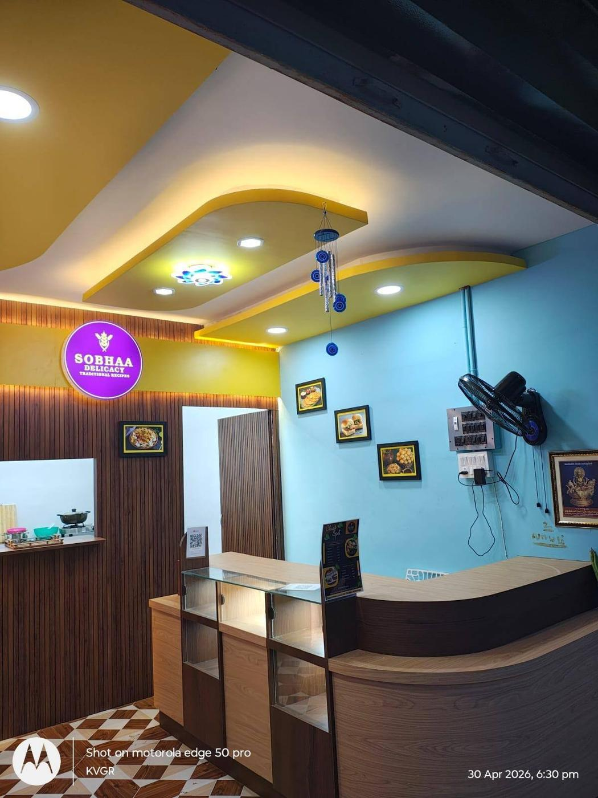
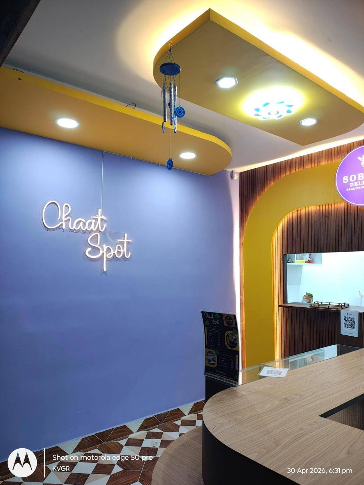
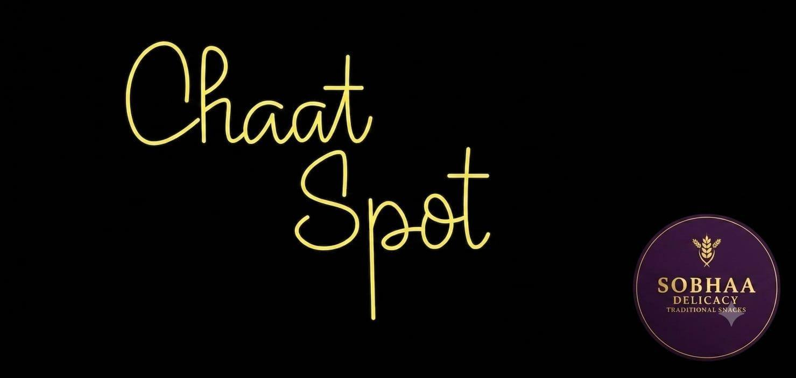

Chaat Spot at Karai Marina
Chaat Spot - Traditional Snacks & Chaat
Enjoy chaat, traditional snacks and quick bites in a colourful food-street ambience near Karaikal beach.
A colourful corner for Chaat Spot chaat and traditional snack lovers
Chaat Spot brings a bright chaat experience to Karai Marina. The shop is designed with a premium yellow, blue and wood-tone interior, making it a friendly stop for families, friends and evening visitors.
- Traditional snacks and chaat-style quick bites
- Colourful dine-in counter ambience inside Karai Marina
- Perfect for casual evenings, family visits and food-street hangouts
Inside the shop
Chaat Spot ambience



Visit Karai Marina
Add Chaat Spot to your food-street experience
Pair your Karai Marina visit with tasty snacks, chaat and a bright photo-friendly ambience at Chaat Spot.